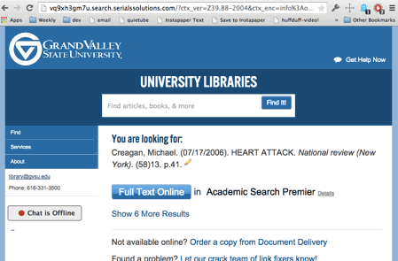

This bookmarklet changes the header of the page. Go ahead and click it to run it on this page.
This bookmarklet adds a friend to most web pages. Click it to run on this page, or drag the link to your bookmarks bar to install it.
This bookmarklet removes the header from this page.
This bookmarklet removes the header from this page.
Below is the code for the exercises bookmarklet. Install it in your browser, and head over to the Exercises Home Page to try it out.
javascript:(function(){var liList=document.getElementById('table-of-contents').getElementsByTagName('li');var liElements=li.List.length;alert('There are ' + liElements + ' exercises for this book');})();Many scripts are too complex to fit in the bookmarklet itself, so we can use the bookmarklet to append longer scripts. Below is the code for a bookmarklet that installs a remote script. Install it in your browser and try it on a web page. It should look familiar!
javascript:(function(){var newScript=document.createElement('script');newScript.src='//mreidsma.github.io/vendor_tools/js/bookmarklet.js';document.body.appendChild(newScript);})();This bookmarklet allows ProQuest customers to reload the current link resolver page with their new 2.0 interface, so that libraries can test the new features without needing to set up a test environment or inconvenience users.

javascript:location.href=location+'&newUI=1clickoff';{var headerDiv=document.getElementById('page-header');headerDiv.style.backgroundImage='url(img/rainbow.png)';headerDiv.style.backgroundRepeat='repeat';})();){kind=link}
{var unicorn = document.createElement('img');unicorn.src='http://mreidsma.github.io/vendor_tools/img/unicorn.gif';unicorn.alt='Unicorn!';unicorn.style.position='fixed';unicorn.style.left='0';unicorn.style.top='10%';document.body.appendChild(unicorn);})();){kind=link}